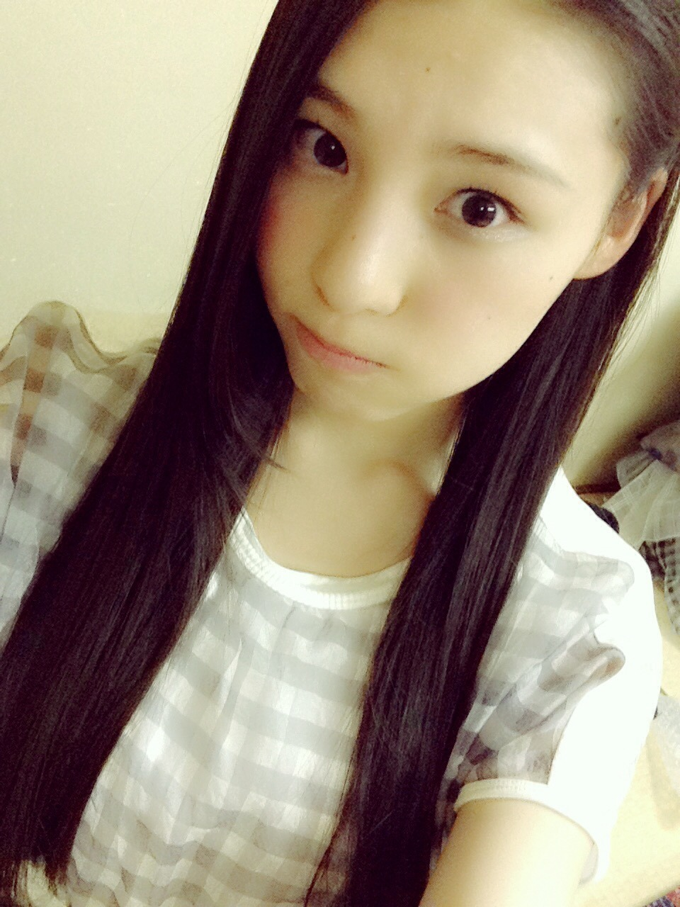
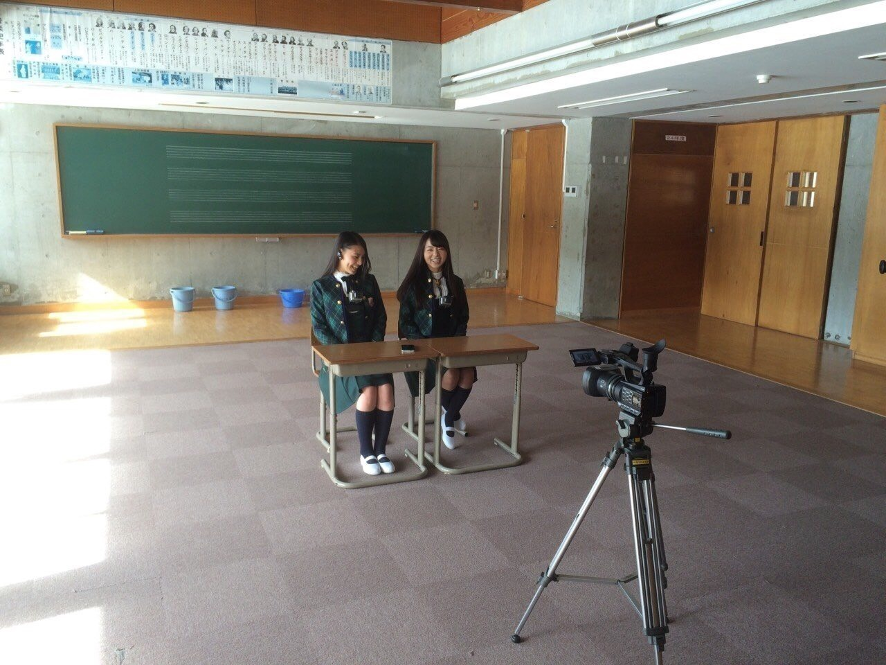
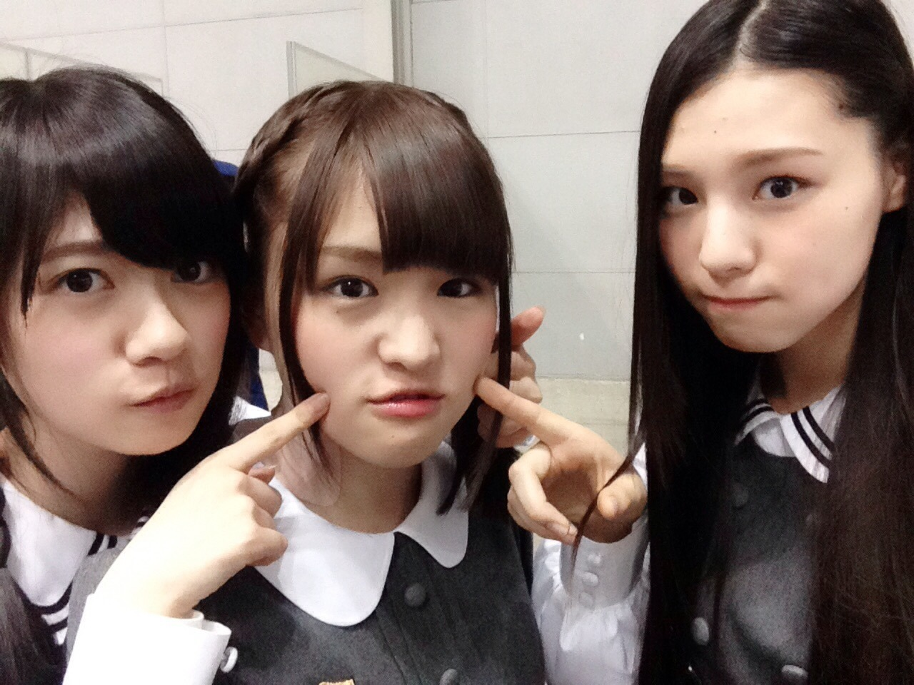
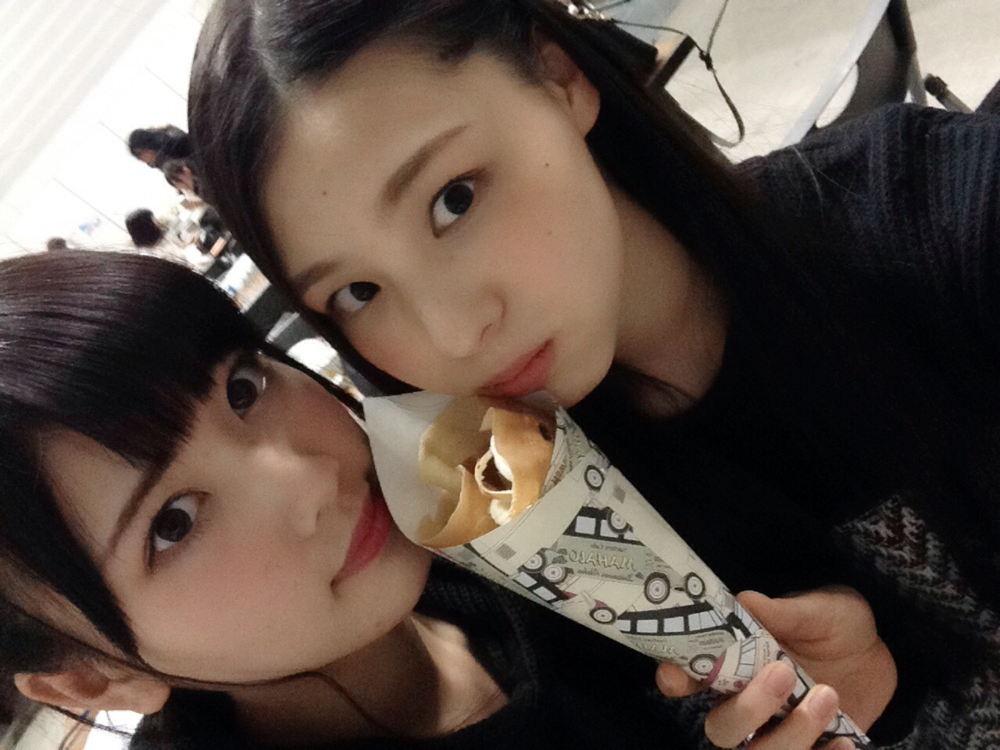
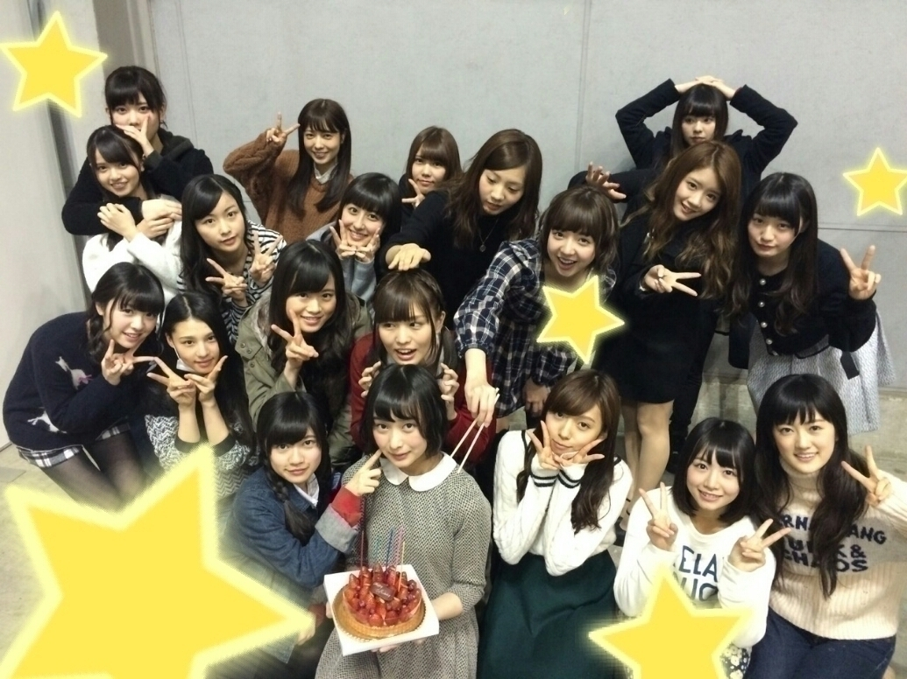
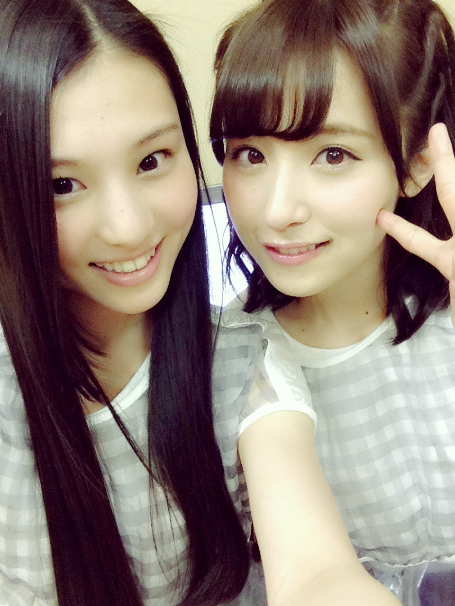

| 2015/03 08 Sun | き いおり、ステーキ食べた_ (．．*)vol.12 |
みなさんこんばんはー！
さがらいおりです！

11 th特典映像
今回はペアpvということで
まひろさんと撮ってきました！
まにさん♡ろてぃさん♡
意外と｢さん｣つけても呼びやすい！
楽しかったんだよー♪♪
お時間あるときに
見てみてください！！

あと、乃木坂カフェのメニュー
いおりも案を出したり
試食したりして
少しだけお手伝いしてるので、
完成が楽しみです：）
メニューが決まったら
また試食会開くって！！
またまいちゅん働くのかな(∩´∀`∩)？
今日はアルバム特典
撮影会でしたー！！
来てくれた方ありがとうございました♪♪
自分の携帯やカメラの中に
しっかり残しておいて下さいね♡
間違っても消しちゃダメですよー(っ `-´ c)‼

思ってたよりたくさんの方が
来てくれてて嬉しかったです(´,,•ω•,,)♡
クレープ屋さんも出張して来てくれてたの♡

チョコバナナ生クリームと
キャラメルバナナ生クリーム
2 つも食べちゃった、、
とっても美味しかったです：）
それとね、
この前生駒さんが好きな
チューイングキャンディーあげたら
ジュース買ってくれたの♡
ちよっとウキウキした！
ジュース買ってくれたのは 2 回目なの♡
この前アルバム特典の
コーディネート選んできました！
いおりが着て欲しいものを選んだので、
着てくれたら嬉しいな *˙︶˙*)ﾉ"
絢音ちゃん誕生日おめでとう(´,,•ω•,,)♡

これからもよろしくねー♡
この前雑誌の撮影を
3 つもしてきました♪♪

発売前に告知しますね～
i o r i .

コメント(246)
2015/03/08 23:42